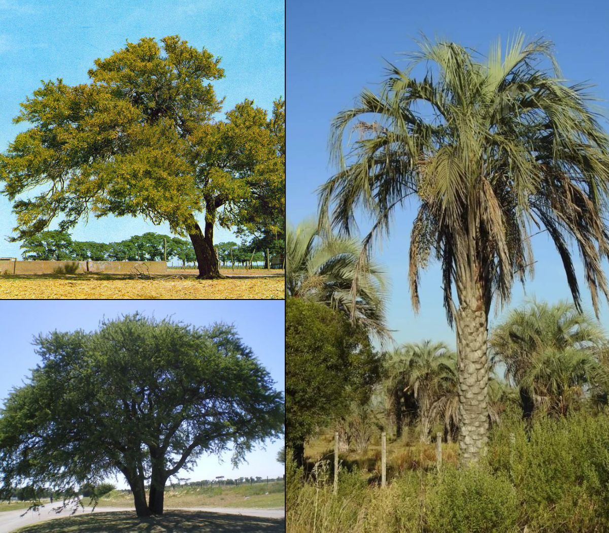

Ecorregiones

Ubicado entre los límites de las regiones pampeana y el Espinal, en plena provincia de Entre Ríos, se alza El Palmar como uno de los parques nacionales más emblemáticos de la Argentina. Abarca más de 8000 hectáreas de pastizales, atravesados de humedales donde conviven todo tipo de formas de vida.


Su principal atractivo es también su nombre: “El Palmar” hace referencia a la yatay, una palmera endémica de la región y que en los últimos años se vio reducida en número por la expansión de la agricultura y la deforestación. Como integrantes de la flora, también destacan el ñandubay, árbol de corteza extremadamente dura y proveedor de chauchas; y la tala, otro árbol igualmente resistente elegido por diversas especies de aves para nidificar.
En cuanto a la fauna, el primer vistazo nos va a dirigir al logo del parque. En él, encontraremos a la vizcacha, un gran roedor emparentado con las chinchillas. Se refugia en grandes grupos dentro de las “vizcacheras” (madrigueras típicas de la especie), saliendo en las noches para pastar. Estas mismas vizcacheras son utilizadas por otros animales, como la yarará, una serpiente infame por su veneno; y los zorros, uno de sus principales depredadores. Por otro lado, en los cuerpos de agua es típico el carpincho, el roedor más grande del mundo, herbívoro y gregario; el lobito de río, ávido cazador de peces; y el aguará popé (u osito lavador), pariente del mapache norteamericano.
.jpg)